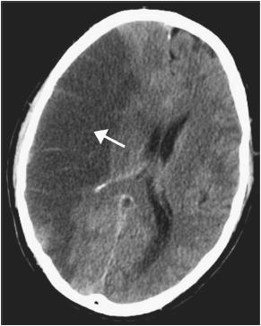
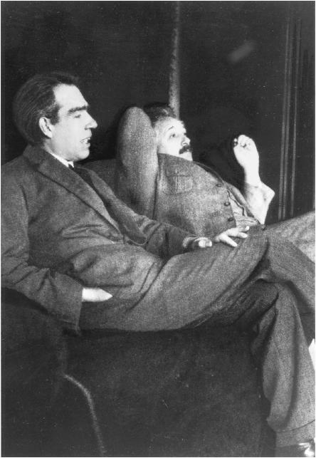

第16章 避免自负
团队合作的力量
弗雷德遇到了一个问题——他的左手不能动了。这并非意料之外，一个月前他边洗澡边唱歌时，右脑突发致命的缺血性脑中风。大脑的右半球控制左侧身体，这就是他为何左手不能动。
然而他真正的问题远比这要严重。尽管他无法控制左手运动，但他坚持，甚至是深信不疑，他左手没有问题。有时他会借口说自己是太累了，累到一根手指都不想动。有时他会说左手明明已经动过了，只是你们没看到。他甚至会偷偷借助右手移动左手，然后大声宣布左手刚刚自己移动了。
幸运的是，几个月后，弗雷德的左手逐渐恢复了知觉。他把自己之前自欺欺人地相信几星期就能从中风中复原的故事当作笑谈讲给医生听，并且非常开心可以回到会计的工作中去。
然而种种迹象表明，回归工作的弗雷德却是今非昔比。他过去是个温柔体贴的人，现在却固执己见，自以为是。
不仅如此，他曾经非常热衷于恶作剧，现在对别人的笑话却只是似懂非懂地点头。他高超的投资技能也消失得无影无踪，盲目乐观和过度自信取代了谨慎小心。
更糟糕的是，他似乎失去了体察情绪的能力。他未经妻子同意就卖掉了她的车，还对妻子的不满表示惊讶。当家中陪伴多年的爱犬去世时，他的妻子和孩子都在伤心哭泣，他却平静地抱着爆米花坐在一边看着他们，就像在看一场电影。
令人费解的是，他的智力，包括惊人的数字能力却丝毫未损。他仍然可以飞快地整理出一份交易损益表，解出复杂的代数题。但反常之处在于，如果他的计算出了错，无论这错误多么荒诞无稽，比如一家热狗摊亏损上10亿，他都不会感到有问题。他不会跳出数字本身，根据常识或从整件事情上意识到“等等，这不对”。
事实上，弗雷德是典型的“右半球大范围知觉障碍”的受害者。[1]中风使弗雷德大脑右半球的大部分区域失去功能。尽管他的大脑还能运转，但只是部分的。
尽管我们需要警惕，“左脑/右脑”的假设是浅显的，也不完全正确，但我们同样不想泼洗澡水时把孩子一起泼出去，全然不顾那些暗示了左右脑差异的有价值研究。[2]认知能力涉及大脑的许多区域，弗雷德的故事就提醒了我们这项能力受到限制时的危险。的确，就算我们不完全使用能力，也不会受到这么大的影响。但即使极小的缺失，都有可能对工作带来意想不到的负面影响。

Schutz 2005。“弗雷德”是具有“右脑宏观感知障碍”典型特征的假想综合体。
避免过度自信
大量研究证实，右脑有助于我们退开一步，从全局着手考虑问题。[3]因此右脑受损的人通常不会有“啊哈”这样灵光一现的时刻。这就是为什么弗雷德没办法抓住笑话的笑点。事实证明，右脑在对把事情导入正规和“代入现实情境”中起到至关重要的作用。[4]
某种意义上，如果你一口气做完作业或者试卷，而完全不回头检查，你就是放弃了使用一部分的大脑。不停下来换换脑子，再回去从整体上看看自己所做的工作，就不知道结果是否说得通。[5]著名的神经科学家V.S.拉马钱德兰这样说：右脑的任务就是扮演魔鬼代言人的角色，不停地质疑现状寻找矛盾；而左脑则坚持事物原本的样子。[6]这一观点与心理学家迈克尔·葛詹尼加的开创性研究相呼应，他认为左脑为我们解释这个世界，并不遗余力地保护这些解释不被更改。[7]
在专注模式下工作时，很容易在假设和计算中出很多小错误。如果一开始就有了偏差，即使其余的都正确，结果也是错误的。有时答案甚至会错到可笑，比如算出地球的周长只有2.5（2又1/2）英尺[8]。但你不会在意这些根本说不通的结果，因为专注模式只在乎计算过程本身。
这就是专注模式，也就是依赖左脑的分析模式的问题。它使你条分缕析并保持乐观，但同时大量研究也显示了它潜在的死板、教条、自我中心的可能性。
当你万分肯定自己完成的作业或试卷没有问题时，不好意思，这可能是过度自信的观点，由左脑产生。当你回头检查时，你的左右脑之间才有了更多互动的机会，互相取长补短，从不同角度发挥各自的能力。
数学不好的人往往会落入“套公式”的陷阱，他们迫切地想要归纳书本和老师的做法，然后把问题直接套进公式就万事大吉。而会学习的人则会检查自己所做的一切，确保是行得通的。他们会思考方程的意义，它们从何而来。
第一准则就是你不能自己欺骗自己，因为自己是世界上最容易被骗的人。[9]
——理查德·费曼（Richard Feynman）
物理学家，建议如何避免伪科学浑水摸鱼
集思广益的价值
尼尔斯·波尔曾全身心地投入到曼哈顿计划中，这一计划是美国在第二次世界大战时期提出的，力争在纳粹德国之前造出原子弹。他是当时在世的最伟大的物理学家之一，可最终这一地位却使他无法在物理学上真正进行思考。
波尔被尊称为天才，因为他凭直觉提出的量子理论被认为无懈可击。这同时意味着无人能和他进行对等讨论与思考。无论他提出的点子多荒谬，其他参与原子弹研发的物理学家都会用“啊”“天呐”这样的方式附和他，将他的话奉为至理名言。
波尔用巧妙的方式处理了这个挑战。
那就是在物理学上初生牛犊不怕虎的理查德·费曼。费曼不惧权威，无论与谁共事都一样，这让他成了波尔的秘密武器。在洛斯阿拉莫斯几百名杰出的物理学家中，费曼只能算是后辈。但在和其他物理学家会面之前，波尔总要先单独和他讨论一番，这是为何？因为只有费曼没有被波尔的权威吓倒，他还会指出波尔的一些愚蠢想法。[10]

1925年，波尔和爱因斯坦靠在椅子上聊天。
波尔清楚，只要对方有所见解，与人合作、集思广益都会有所帮助。凭借个人的努力分析工作，无论是两种模式还是左右脑，都难免会有不足。毕竟，每个人都有盲区。乐观的专注模式会本能地跳过错误，尤其是错误本来就是你自己造成的时候。[11]更糟糕的是，有时你甚至还盲目地相信自己能搞定一切，但事实是你不能。（这种状况并不少见，比如你以为自己能考得很好，结果却惊讶地发现自己根本没及格。）
和朋友一起学习能让你更容易看出自己哪里理解有偏差。朋友和队友都会成为有问必答的大容量发散模式，在你的大脑之外，为你弥补缺失或忽视的地方，而且就像我们之前说到过的，向朋友解释也有助于你建立起自己的理解。
合作的重要性不仅体现在解决问题上，在你想要职业规划时也大有裨益。队友一句简单的建议，比如上一门热情的教授开的课，或者应聘一个新的职位，都有可能扭转你的人生道路。社会学家马克·格兰诺维特的论文《弱连接理论》是社会学中最常被引用的一篇文章。其中提到，你的熟人数量，而非好友数量，保证了你能得知的最新信息以及工作中的成功。[12]毕竟，你的好友圈和你的社交圈基本重合。但熟人和同学却很可能处于不同的社交圈中，这意味着你能接触到的“脑外”发散模式被指数倍扩大了。
和你一起学习的同学应当具有积极的批判性，至少偶尔要是这样。对团队中创造力的研究表明，那些气氛和缓不做批判的互动讨论，不如允许甚至渴求批评的讨论有效。[13]如果你或你的同伴认为你的理解有误，最重要的是坦诚说出来，然后具体讨论何处有误，不要担忧这会伤害到对方的感情。当然，你不会想平白地得罪别人，但过多担心批评而塑造出的“安全环境”，实际上会抹杀建设性和创造力，因为你会过多地注意人而不是事。像费曼一样，你要了解，无论是你给别人的还是别人给你的批评，都是对事不对人的。这关系你要了解的事物本身。人们往往意识不到，竞争是一件好事，它可以激发最大的潜能，是激进的合作。
和密友、伙伴、同学等一起讨论还有别的好处。你通常不太介意在朋友面前出丑，当然，还是不要太出丑，至少不要经常如此。和别人一起学习，有点像在观众面前排演节目。调查表明，当众表演让你更容易学会随机应变，在考试或演讲这类有压力的环境下会让你表现得更好。[14]另外一项集体学习的优势则体现在可靠来源也有可能出错时。无论你的导师或是书本多出色，也必然会有出错的时候。你的朋友可以为你验证和解答令人困惑的结果，防止你因为书上离谱的错误而钻牛角尖，从而浪费好几个小时。
最后提醒一下，团队学习对数学、科学和工程等科技类学科非常有效。然而，如果是社科类的学习，就不是这样了。减少闲谈，跟上节奏，完成作业。[15]如果你发现讨论会推迟了5~15分钟才开始，成员还没读材料，或者讨论经常跑题，那么尽快换一个学习小组。
内向性格者的团队合作
我性格内向，不爱和别人合作。但当大学工程学学得不好时（那是20世纪80年代的事了），我决定找个帮手，尽管我还是不想和人合作。因为那时还没有网上聊天，我们就写便条贴在对方的宿舍门上。我和同学杰夫有这样的规矩：我会写“1）1.7米/秒”，这就是第一题答案是1.7米/秒的意思。等我洗完澡回来，看到杰夫写了“不，1）11米/秒”，表示他认为第一题的答案是11米/秒。我绝望地回去检查自己的作业，果然发现了问题，可第二次算出来的结果是8.45米/秒。杰夫正在宿舍里练吉他，一看见我来找他，连吉他都没有放下就开始和我激烈地讨论。然后我们各自思考自己过程，我突然发现答案是9.37米/秒，他也发现了。这样我们就完全搞定了这次的作业。就是这样，如果你不喜欢小组合作，仍然有其他只需要极少互动的合作方式。
——保罗·布鲁尔斯（Paul Blowers）
亚利桑那大学杰出教授（源自他杰出的教学贡献）
本章小结
·即使你自信一切没有任何问题，专注模式还是会让你不经意地犯下致命的错误。温故知新，不同的神经活动过程可以让你重新审视结果，抓出错误。
·和愿意提出不同见解的伙伴一起讨论，可以：
·找出你想法中的错误；
·更容易学会随机应变，更好地应对有压力的处境；
·确保你真的理解了你想让别人解释的知识，巩固已有的知识并提高学习能力；
·建立起重要的职业关系，帮你做出更好的选择。
·学习中的批评，无论你是批评者还是被批评者，都应该客观对待。它们是在帮助你理解所处理的问题。
·小心不要自欺欺人。
驻足回顾
合上书，转开视线，这一章主要讲了什么？当你和朋友在一起时，试着回忆上面说的方法，让你的朋友知道他们的帮助对你有多宝贵！
学习提升
1.举一个例子：你原本对某件事百分之百确定，结果却证明你是错的。经过这样或类似的事情，你是否更听得进别人对你想法的批评了呢？
2.如何使你们的学习小组更有效率？
3.如果你所在的小组讨论的不是你的学习内容，该如何处理？
物理学教授布拉德·罗斯对学习的见解[16]
我在课上反复强调，先思考再计算。我很不喜欢很多学生用的“公式法”，而且我发现自己必须经常提醒他们，方程不只是一个有输入有输出的表达式。方程描述了我们的物理世界如何运转。对于我来说，理解一个方程的关键，在于理解它所描述的故事。对方程的定性理解远比定量计算出答案更重要。
以下是几条建议。
1.通常情况下，检查计算过程花的时间比解决问题要少得多。因为没花2分钟检查，导致花了20分钟做出来的题错误，这就太可惜了。
2.量纲分析是你的朋友。如果方程两侧的计量单位不同类，那就肯定出错了。你不能把秒和米加在一起，它们一个表示时间，一个表示长度。就像一堆苹果加上一堆石头，结果什么也不是。你可以回头检查过程，错误很可能就发生在单位不再匹配的那一步。有人让我帮忙看投递给专业期刊的投稿论文，其中也会出现这样的问题。
3.你要思考方程的意义，这样可以对计算结果有所预期。如果差很多，要不是你想错了，要不是你算错了。无论是哪一种，搞清楚之后你就赢了。
4.（这个稍微有点难）对一个复杂的式子，变量分别取极限，让它趋于零或无穷，然后看结果是否对你理解方程的含义有所帮助。
[1] Schutz 2005。“弗雷德”是具有“右脑宏观感知障碍”典型特征的假想综合体。
[2] McGilchrist在2010年对此提出了全面描述，支持半球功能存在差异的说法，Efron 1990年发表的论述虽然已有些过时，但对半球研究提出的问题还是提供了非常值得注意的阐述。请参阅Nielsen et al.2013；医学博士兼哲学博士Jeff Anderson，参与了本项研究，他指出，“有些脑功能确实只发生在大脑的某一侧。语言由左脑负责，注意力更多由右脑负责。但人通常不会有一个更为发达的左脑或者右脑。这似乎是由神经的逐步联结决定的”（犹他大学公共关系卫生保健办公室2013）。
[3] McGilchrist 2010，pp.192-194，203.
[4] Houdéand Tzourio-Mazoyer 2003。Houdé2002第341页写道：“神经成像结果表明，在神经系统完整的主体中，右腹内侧前额叶皮层区域直接参与了逻辑意识的形成，也就是说，它把思想放入‘逻辑路径’中，这样我们就可以进行演绎推理……因此，右脑内侧前额叶皮层可能是大脑误差修正工具中的情感组件。更准确地说，这个区域可能联络到了自我感觉装置，其能检测出可能发生逻辑推理错误的情况。”
[5] 请参阅Stephen Christman和他的同事2008，p.403，其中指出，“左半球维持我们现有信念，而右脑评估更新那些恰当的信念。因此评估信念依赖两个半球之间的合作”。
[6] Ramachandran 1999，p.136.
[7] azzaniga 2000；Gazzaniga et al.1996.
[8] 1英尺≈0.3048 米。
[9] amachandran 1999，p.341。最初为1974年的加州理工学院毕业典礼上的演讲。
[10] eynman 1985，pp.132-133.
[11] Alan Baddeley和他的学生（2009，pp.148-149）写道：“我们防止自尊心受打击的方法有很多。我们乐意听见表扬但是对于批评往往不以为然，常把批评归结于别人的偏见。我们倾向于在成功时抢功，却拒绝在失败时承担责任。如果这招数行不通，我们就会有选择地忘记失败，只记住成功和称赞。”（参考文献略。）
[12] ranovetter 1983；Granovetter 1973.
[13] llis et al.2003.
[14] eilock 2010，p.34.
[15] Arum and Roksa 2010，p.120.
[16] 布拉德·罗斯是美国物理学会董事，及Intermediate Physics For Medicine And Biology一书的作者之一。